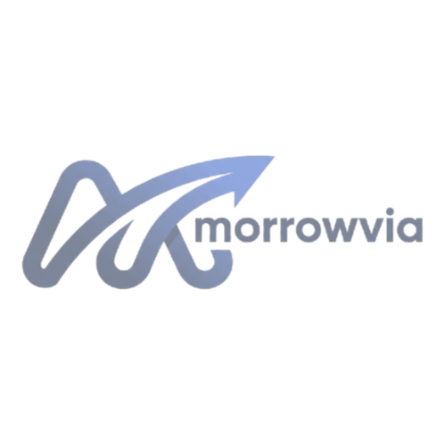
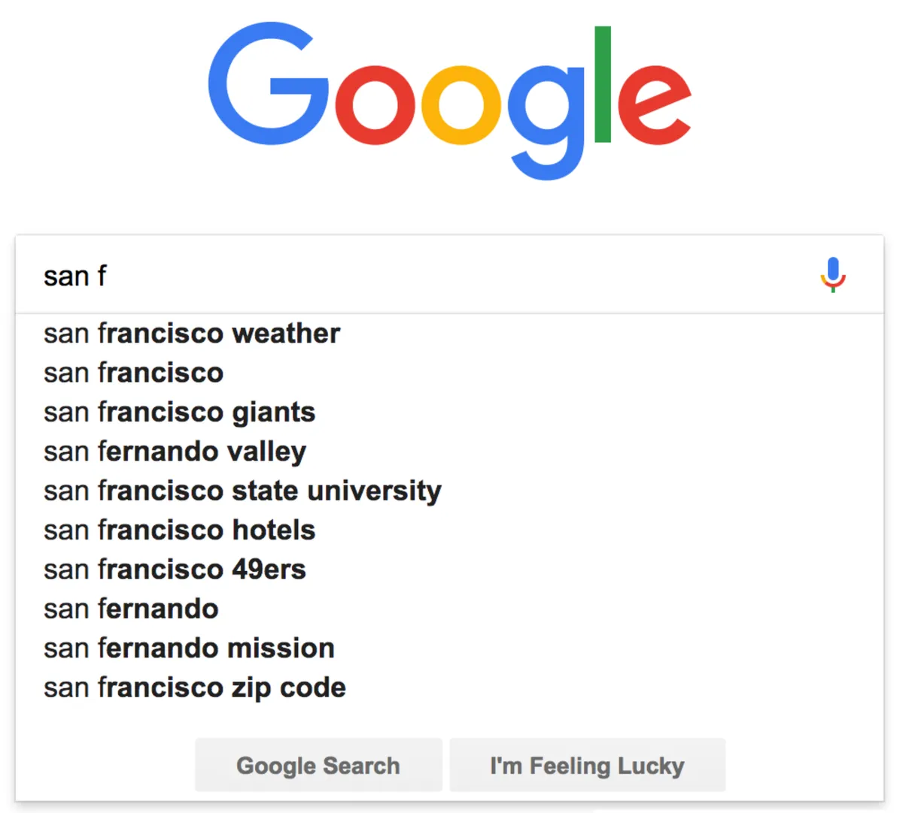
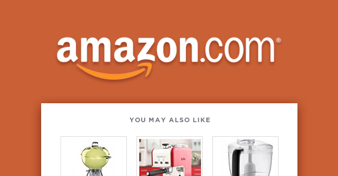

This is the Morrovia Workplace Assistant - an AI chatbot that can read company documents and answer questions about them in a chatbot-style format. Combines LLM skills and RAG architecture along with GUI design.
Check it out!
I developed this predictive writing assistant to suggest words/characters based on what the user types, similar to the autocomplete feature on phones, but I added a unique twist by basing the data off movie scripts.
Check it out!This is the earliest attempt I made towards creating a digital assistant chatbot, nicknamed "Digitron". It's not really a "chatbot", but more of a helpful program that can extract information from sources like Wolframalpha and Wikipedia to answer questions, kind of like a web scraper. It can do more than that though, so feel free to take a look!
Check it out!
This project uses randomly generated data to simulate how users rate products based on category preferences and visualize pricing trends across different categories. It uses Numpy, Pandas, and Matplotlib to handle data, perform numerical operations, and create graphs.
Check it out!